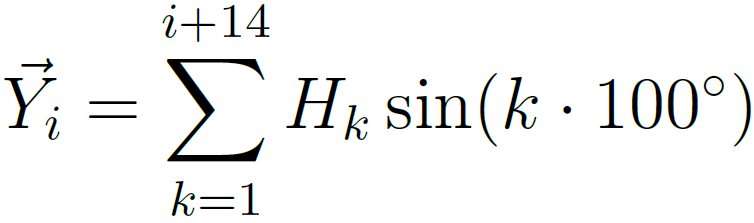
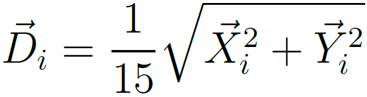

Examples: Amphipathic RILIFLLEFLLDCTGEVDKKRQ, Hydrophobic DLVLTVLIALAVYFLGRL, Hydrophilic KLPGKSGRTWREADVNYTS
Helical Wheel
Disparity Calculation
Window Size: 15, Sequence Length: 0



Hydropathy Scale
(Kyte & Doolittle, 1982)
Hydrophobic to Hydrophilic
| I | Isoleucine | 4.5 |
|---|---|---|
| V | Valine | 4.2 |
| L | Leucine | 3.8 |
| F | Phenylalanine | 2.8 |
| C | Cysteine | 2.5 |
| M | Methionine | 1.9 |
| A | Alanine | 1.8 |
| G | Glycine | -0.4 |
| T | Threonine | -0.7 |
| S | Serine | -0.8 |
| W | Tryptophan | -0.9 |
| Y | Tyrosine | -1.3 |
| P | Proline | -1.6 |
| H | Histidine | -3.2 |
| E | Glutamic acid | -3.5 |
| Q | Glutamine | -3.5 |
| D | Asparagine | -3.5 |
| K | Lysine | -3.9 |
| R | Arginine | -4.5 |